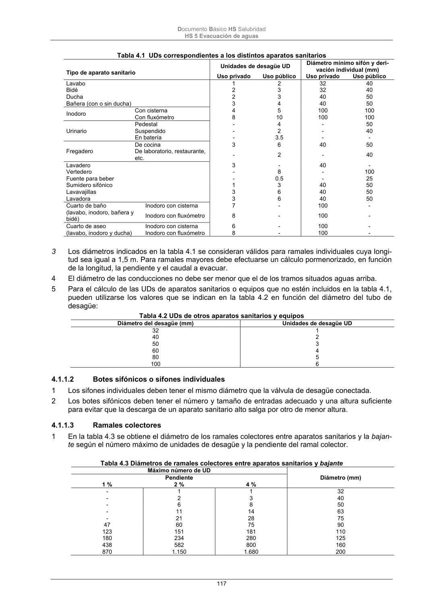

DB-HS · Página 117 · versión 2022-06-14
SHA256: 68df3caacc95f71aee2ec1ba7b2c65ae66155c21e3a8785521b8fdd4fd640d3b · página física 117 de 184 · métodos de encabezado
solo si están cotejados.
Documento · ← p. 116 · p. 118 →
Formatos: Markdown · JSON de bloques · PDF p. 117 · imagen PNG
Documento Básico HS Salubridad HS 5 Evacuación de aguas 117 Tabla 4.1 UDs correspondientes a los distintos aparatos sanitarios Tipo de aparato sanitario Unidades de desagüe UD Diámetro mínimo sifón y deri- vación individual (mm) Uso privado Uso público Uso privado Uso público Lavabo 1 2 32 40 Bidé 2 3 32 40 Ducha 2 3 40 50 Bañera (con o sin ducha) 3 4 40 50 Inodoro Con cisterna 4 5 100 100 Con fluxómetro 8 10 100 100 Urinario Pedestal - 4 - 50 Suspendido - 2 - 40 En batería - 3.5 - - Fregadero De cocina 3 6 40 50 De laboratorio, restaurante, etc. - 2 - 40 Lavadero 3 - 40 - Vertedero - 8 - 100 Fuente para beber - 0.5 - 25 Sumidero sifónico 1 3 40 50 Lavavajillas 3 6 40 50 Lavadora 3 6 40 50 Cuarto de baño (lavabo, inodoro, bañera y bidé) Inodoro con cisterna 7 - 100 - Inodoro con fluxómetro 8 - 100 - Cuarto de aseo (lavabo, inodoro y ducha) Inodoro con cisterna 6 - 100 - Inodoro con fluxómetro 8 - 100 - 3 Los diámetros indicados en la tabla 4.1 se consideran válidos para ramales individuales cuya longi- tud sea igual a 1,5 m. Para ramales mayores debe efectuarse un cálculo pormenorizado, en función de la longitud, la pendiente y el caudal a evacuar. 4 El diámetro de las conducciones no debe ser menor que el de los tramos situados aguas arriba. 5 Para el cálculo de las UDs de aparatos sanitarios o equipos que no estén incluidos en la tabla 4.1, pueden utilizarse los valores que se indican en la tabla 4.2 en función del diámetro del tubo de desagüe: Tabla 4.2 UDs de otros aparatos sanitarios y equipos Diámetro del desagüe (mm) Unidades de desagüe UD 32 1 40 2 50 3 60 4 80 5 100 6 4.1.1.2 Botes sifónicos o sifones individuales 1 Los sifones individuales deben tener el mismo diámetro que la válvula de desagüe conectada. 2 Los botes sifónicos deben tener el número y tamaño de entradas adecuado y una altura suficiente para evitar que la descarga de un aparato sanitario alto salga por otro de menor altura. 4.1.1.3 Ramales colectores 1 En la tabla 4.3 se obtiene el diámetro de los ramales colectores entre aparatos sanitarios y la bajan- te según el número máximo de unidades de desagüe y la pendiente del ramal colector. Tabla 4.3 Diámetros de ramales colectores entre aparatos sanitarios y bajante Máximo número de UD Diámetro (mm) Pendiente 1 % 2 % 4 % - 1 1 32 - 2 3 40 - 6 8 50 - 11 14 63 - 21 28 75 47 60 75 90 123 151 181 110 180 234 280 125 438 582 800 160 870 1.150 1.680 200
